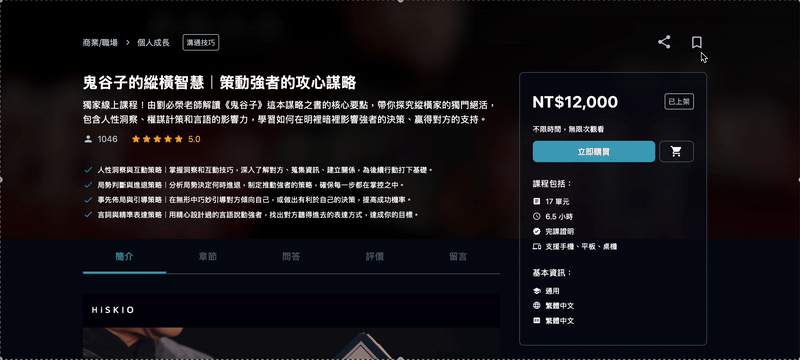
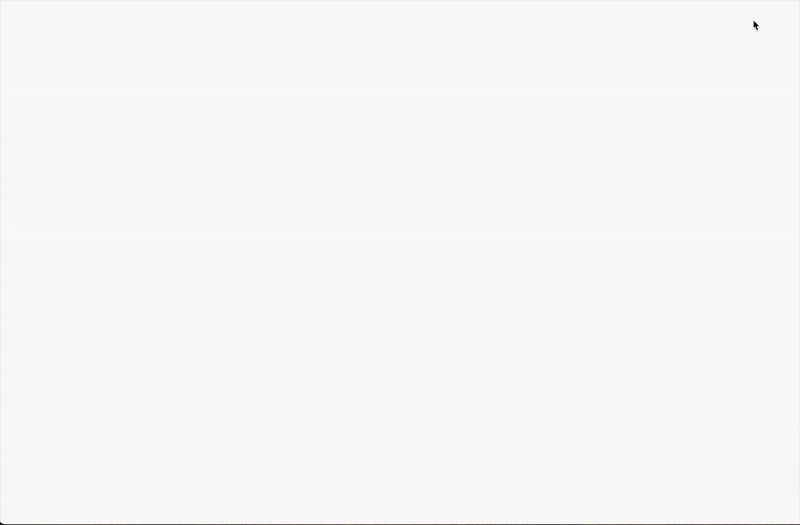

如果你不確定是否要購買這門課程的時候，可以先選擇「收藏課程」，就不用煩惱到天荒地老，先喝杯咖啡再來決定
您也可以先使用「 課程試閱 」，瞭解課程內容及規劃哦再決定哦！
收藏課程的方法
進入課程頁面，於課程右上方書籤符號，即可加入 / 取消收藏。

查看「我的收藏」
登入後，點選畫面右上方「我的學習」，並切換至「已收藏」頁籤，即可查看已收藏的課程。
將滑鼠游標放到課程卡片上方，將顯示課程資訊。

小提醒
・若您原本收藏的課程有「優惠價格」，則收藏後會顯示「原價」，請您自行保存優惠連結，並於優惠截止前透過優惠連結完成購買。
・如需取消收藏已購買的課程，可以至課程頁面，於課程右上方書籤符號取消收藏。
更新時間： 27/05/2025